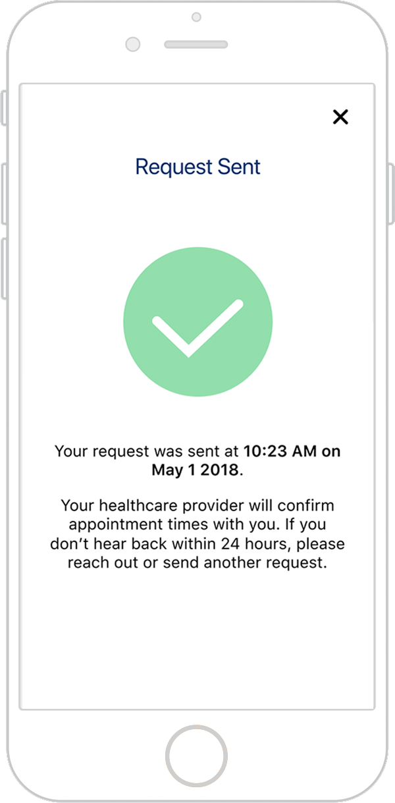
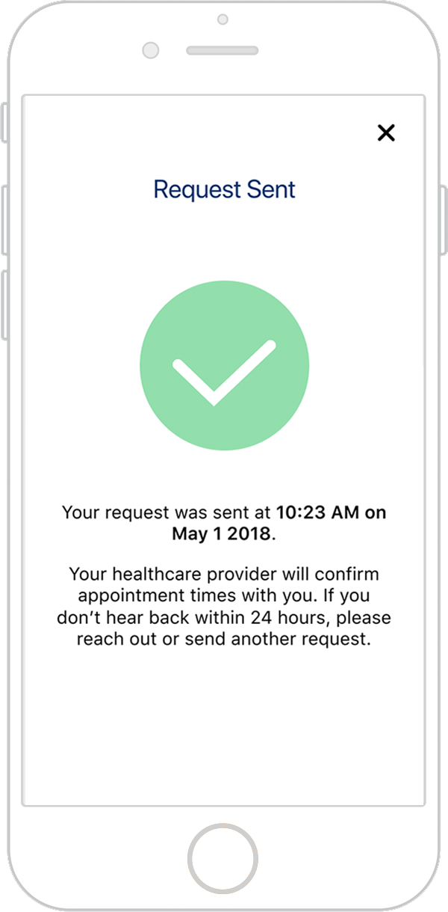

Easing medical translation for non-professionals
Challenge
To inform and equip caretakers of Low English Proficiency (LEP) patients with the resources to request quality translation services in healthcare settings.
Outcome
A mobile app and print piece for POLLY, our service that facilitates communication between LEP patients, doctors and caretakers.
Role Researcher, Designer
Team Lily Kim (designer), Helen Kim (developer), Sophie Zhao (developer)
Overview
Inaccurate medical translation can lead to misinformed and dangerous decisions about a patient's health, yet patients often ask unqualified friends or family to fill in as "ad hoc" translators instead of requesting a professional. Through our research, we identified factors that contribute to this problem and sought to alleviate them.
We designed 2 touchpoints:
1) A pocket course that provides users with professional tips for medical interpretation. This would be found in waiting rooms or doctor’s offices to introduce people to POLLY and direct them to the mobile app.
2) A mobile app that offers POLLY's full services, allowing users to make requests for professional translators, translate more effectively, and track the patient's medical activity.


Target Users

Profile
- Age: 15-35
- Biracial or non-Caucasian
- Child or relative of an immigrant
User Needs
- More effective translation between the doctor and patient
- To be informed about language services in health care
- Doctor-patient confidentiality
Our users are family members of LEP patients who accompany them to doctor's appointments to act as "ad hoc" translators. Typically English is their primary language, so they feel frustrated or ill-equipped to translate medical terminology. They want better translation options, or relief from the role.
Research
Ad Hoc Interviews
Speaking with people who have acted as non-professional translators, we learned more about our users and the factors that cause them stress during medical visits.
- Second generation children often translate for older family members.
- As immigrants, many LEP patients carry “at-risk” status (uninsured, undocumented, or of low-SES background).
- Many patients had never been offered proper translation services, so they weren't even aware of the option.
- If they were aware, they might not feel comfortable with having a stranger translate.
My parents thought I was more legit [than a professional translator]. And they trust me; if I mess up, they know it wasn't on purpose.
Expert Interviews
Conversely, we found differing viewpoints when speaking with medical experts.
- Some clinics were much stricter than others on only consulting professional translators. They tended to have more efficient systems to reach them.
- Health centers handle medical translation differently depending on the community around them. For example, in areas with high immigrant populations, doctors may use the services of local, non-professional translators.
Family members will put their own spin on things. If they don't understand what the physician is saying, they'll skip it. We use family as a last resort.
Research Analysis
We identified common points of stress for caretakers before, during, and after appointments: setting appointments, translating, retrieving the patient’s prescription or following up with a specialist.


Development
Pocket Course Development
With these takeaways in mind, we decided our design should keep ad hoc translators well-informed about their rights to quality care and a professional translator, as well as best practices for translation.
We crafted a “crash course” filled with interpretation tips from professionals, designed to feel reassuring and fit in the user’s pocket.


App Development
The app’s purpose was to offer users more abundant resources in digital form. As one of 2 designers I conducted research to determine helpful app features and to test usability, created wireframes and user flow, wrote copy, and created assets.


Final Deliverables
Pocket Course
The pocket course provides professional translation tips, bringing attention to common errors. We prototyped in different languages to demonstrate how we might consider linguistic design nuances.


Mobile App
The mobile app supports users in requesting professional translation services, providing translation resources, and managing patient information.

Requesting a Translator
 

Viewing Patient Profiles
Interpretation 101 and Dictionary

Learning Outcomes
- Identifying a problem and its audience, constraints, and physical context through user research
- Researching a systemic and sensitive problem space
- Navigating issues of trust and confidentiality, as well as policies and regulations, when designing user flows
- Considering nuances for diverse and localized needs (i.e. text in different languages, use of imagery in other cultural contexts, distribution methods)
- Creating a system with multiple touchpoints and carrying a consistent visual voice
Reflection
If we had time to develop POLLY further, I would love to investigate partnerships with existing medical translation services and Pittsburgh's healthcare infrastructure. It would be interesting to learn how to culminate relationships with health and relocation centers to build a trusted network of resources for LEP clients.